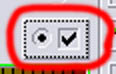
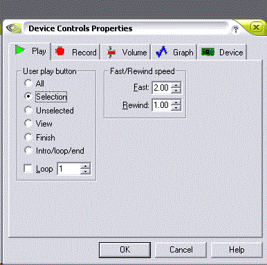
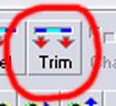
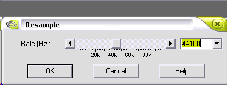

Step 6: Preparing Sounds
The sounds of the car are something else.
You have four to six files, carname0.sfx, carname1.sfx, carname2.sfx, and carnamei.sfx
Optionally, you can have horn.sfx and shift1.sfx.
i.sfx is the idling sound, 0.sfx is the AI / Other Player sounds (when this car is an AI or another player), from idle to 9000 RPM. 1.sfx is the sound from idle to 9000 RPM (at which it is fully faded out), and 2.sfx is the sound from 4000 RPM to 9000 RPM. For a turbo hiss, you can place the hiss as the 2.sfx
horn.sfx is the car's horn, and shift1.sfx is the shifting sound.
You need samples of both 0 and 1 at 3000 RPM. and 2 at 4000 RPM.
You also need to make sure the audio sample loops without popping.
I recommend you use Goldwave as your sound editor, available at www.goldwave.com.
To make sure the sound does not pop in Goldwave, you need to set up the User Mode button.
In the Device controls window, click Properties.

Then, set up the looping playback as seen in the below animation.

Open the unpacked wav file, using File... Open, and play it using the user play button. If it pops, you need to find a place where it won't. Use the left mouse button to drag the starting point, and the right mouse button to drag the ending point, in the window that has the wave file. Pick a place where the sound is at zero on both ends. Hit the user play button again, and see if it doesn't pop. All is well that sounds well.
Hit the trim button to get it right.

Then, make sure the sound is 22 KHz by resampling if you have to. Here's how.
Go to Effects... Resample...
and change the sampling rate, as seen in the animation.

Save your sound, and make sure it is 16-bit MONO. If it is not, then use Save As... to save it with 16-bit MONO.
Do this for ALL the sounds you wish to use.
Once you are finished exporting the sounds, you now need to convert them with mksfx.
You type mksfx yourfirstfile.wav yournewsfx.sfx
You MUST use your car's short name, then put the i, 0, 1, or 2 at the end for the first four SFX's.
Example here:
mksfx sample12a.wav vanqsh0.sfx
Do this one at a time for all your Sounds.
Once you are done playing with your waves, you can move ONWARD.